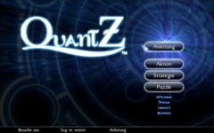
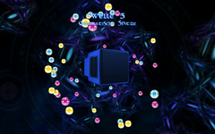
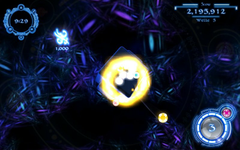

QuantZ
Dieser Artikel wurde für die folgenden Ubuntu-Versionen getestet:
Dieser Artikel ist mit keiner aktuell unterstützten Ubuntu-Version getestet! Bitte diesen Artikel testen und das getestet-Tag entsprechend anpassen.
Zum Verständnis dieses Artikels sind folgende Seiten hilfreich:
QuantZ  ist ein Aktion-Puzzlespiel der Gamerizon Studio, Inc. Gamerizon Studio selbst ist gegründet von den beiden Brüdern Martin & Robert Lizée, mehr Infos gibt es auf ihrer Seite . Das Spiel wurde für Linux erstmals auf reddit (Beta 1.1.2 , Beta1.1.3 ) vorgestellt.
ist ein Aktion-Puzzlespiel der Gamerizon Studio, Inc. Gamerizon Studio selbst ist gegründet von den beiden Brüdern Martin & Robert Lizée, mehr Infos gibt es auf ihrer Seite . Das Spiel wurde für Linux erstmals auf reddit (Beta 1.1.2 , Beta1.1.3 ) vorgestellt.
Einige Leute sagen, man könnte es als eine Art Bejeweled in 3D bezeichnen. Allerdings stimmt diese Aussage nur begrenzt. In QuantZ steuert man nicht die Kugeln selbst, sondern die Grundspielfläche. Ziel des Spieles ist es jeweils, die höchste Punktezahl zu erreichen und das Level abzuschließen. Dies geschieht durch Auslösen multipler Reaktionen, die jeweils immer mit dem Zusammenfügen von vier gleichfarbigen Kugeln beginnen.
Zu beachten ist, dass die Entwickler keinerlei Kopierschutz oder Aktivierungsmechanismen in QuantZ eingebaut haben. Des Weiteren unterstützt das Spiel selbst die Tonausgabe über ALSA, PulseAudio oder OSS (per Selbsterkennung).
Das Spiel selbst läuft neben Ubuntu (bzw. Linux) auch unter Windows und Mac OS X.
|  |
| Hauptmenü |
|  |
| Spieleszene |
|  |
| Spieleszene |
Installation¶
Grundsätzlich gibt es zwei Wege, das Spiel zu spielen: Kostenfrei über die Demo oder mit einem kleinen Aufpreis über die Vollversion.
Hinweis!
Fremdpakete können das System gefährden.
Beide Versionen sind über die Entwicklerseite zu beziehen und können als *.deb-Paket (32 und 64-Bit) heruntergeladen werden.
An Bezahlmöglichkeiten wird z.Z. nur die Möglichkeit über Paypal angeboten.
Spielumfang¶
Vollversion¶
Die Vollversion bringt drei spielbare Bereiche mit:
einen Strategie-Modus, in dem es zwölf Level zu meistern gilt.
einen Aktion-Modus, indem der Spieler auf seine Reaktion und Ideenreichtum getestet wird
einen Puzzle-Modus, wo dem Spieler hunderte von Aufgaben gestellt werden.
Demoversion¶
Die Demo ist begrenzt auf eine Stufe in jedem der drei Spielbereiche. Ansonsten steht der volle Funktionsumfang zur Verfügung. Dabei werden die Einstellungen für Demo und Vollversion in selben Verzeichnis ~/.quantz/ gelagert. So können Spieldaten aus der Demo in die Vollversion übernommen werden.
Wie wird gespielt?¶
Das ganze Spiel findet auf einem Würfel statt, welcher in einigen Leveln auch mal andere Formen und Größen annehmen kann und vom Spieler bewegt wird. Auf diesen Würfel fallen die Kugeln. Diese sind verschiedenfarbig und lösen sich auf, sobald vier von ihnen sich berühren. Eine Reaktion wird ausgelöst sobald sich eine fünfte Kugel, mit anderer Farbe, zwischen vier gleichfarbigen Kugeln befindet. Diese fünfte Kugel wird nun hoch gesprengt und der Spieler kann sie nutzen, um weitere Reaktionen zu verursachen.
Tastenbelegung¶
Gespielt wird allein der Maus. Über die Mausbewegung dreht man den Würfel. Die Tasten bilden dabei die Zeitmanipulatoren. Per Rechtsklick  beschleunigt man die Zeit (die Kugel fällt sofort herunter). Über einen Linksklick
beschleunigt man die Zeit (die Kugel fällt sofort herunter). Über einen Linksklick  wechselt man in einen verlangsamten Modus. In diesem vergeht die Zeit sehr langsam und so kann man sich auf dem Würfel umsehen wo der passende Platz für die Kugel ist.
wechselt man in einen verlangsamten Modus. In diesem vergeht die Zeit sehr langsam und so kann man sich auf dem Würfel umsehen wo der passende Platz für die Kugel ist.
Problembehebung¶
Hinweis:
Dieser Bereich beschreibt im großen und ganzen das User Manual[6]. Die hier aufgeführten Wege sind für die Demo- und Vollversion gedacht.
Freie Grafiktreiber¶
Mit den freien Treibern (intel, ati) gibt es Probleme, die Blur-Effekte darstellen zu können, was darin endet, dass das Spiel an dieser Stelle unspielbar ruckelig wird. Das kann man aber einfach umgehen indem man die Blur-Effekte ausschaltet. Man öffnet die Datei /usr/share/applications/QuantZ.desktop (bzw /usr/share/applications/QuantZ-demo.desktop bei der Demo), in einem Editor[4], mit Root-Rechten[5]. Nun ist der Dateiinhalt des QuantZ-Starters zu sehen. Als nächstes die Zeile
Exec=/opt/QuantZ/QuantZ
ändern zu
Exec=/opt/QuantZ/QuantZ -no-blur
Am Ende sieht das ganze dann so aus:
[Desktop Entry] Type=Application Version=1.1.4 Name=QuantZ-game Comment=A 3D puzzle game Icon=/opt/QuantZ/icons/128x128.png Exec=/opt/QuantZ/QuantZ -no-blur Categories=Game
Neuere Grafikkarten¶
Auf neueren Karten kann man wohl noch ein wenig mehr Geschwindigkeit aus dem Spiel herausholen. Ab wann eine Karte neu ist, ist allerdings nicht wirklich klar. Will man es testen geht es wie folgt:
Man öffnet die Datei usr/share/applications/QuantZ.desktop (bzw. /usr/share/applications/QuantZ-demo.desktop bei der Demo) in einem Editor[4], mit Root-Rechten[5]. Jetzt sieht man den Dateiinhalt des QuantZ-Starters. Nun noch die Zeile
Exec=/opt/QuantZ/QuantZ
zu
Exec=/opt/QuantZ/QuantZ -fbo-blur
ändern.
Am Ende sieht das ganze dann so aus:
[Desktop Entry] Type=Application Version=1.1.4 Name=QuantZ-game Comment=A 3D puzzle game Icon=/opt/QuantZ/icons/128x128.png Exec=/opt/QuantZ/QuantZ -fbo-blur Categories=Game
Dies nutzt einen sogenannten "framebuffer object"-Algorithmus für die Blur-Darstellung, was in mehr Performance enden soll.
Infobox¶
| QuantZ | |
| Originaltitel: | QuantZ |
| Genre: | Geschicklichkeit / Puzzle |
| Sprache: |       |
| Veröffentlichung (linux): | 2010 |
| Publisher: | Gamerizon Studio, inc |
| Systemvoraussetzungen: | mind. 850 MHz / 256 MB RAM / 80 MB freier Festplattenspeicher / 3D Grafikkarte |
| Medien: | Online-Download |
| Läuft mit: | nativ |
Links¶
Gamerizon
- Haupseite der GamerizonPhoronix
- QuantZ-Diskussion in den Phoronix-ForenBeta 1.1.2
- Erste Ankündigung, auf redditBeta1.1.3
- Aktualisierung und RC-Veröffentlichung
- Erstellt mit Inyoka
-
 2004 – 2017 ubuntuusers.de • Einige Rechte vorbehalten
2004 – 2017 ubuntuusers.de • Einige Rechte vorbehalten
Lizenz • Kontakt • Datenschutz • Impressum • Serverstatus -
Serverhousing gespendet von